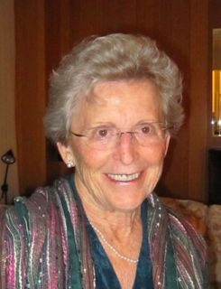
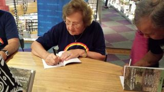
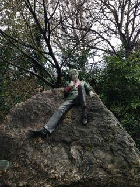
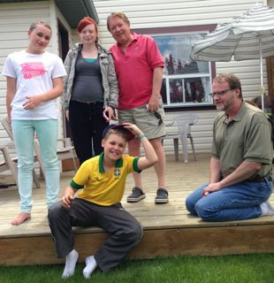
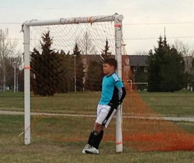
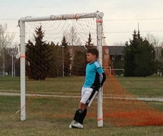
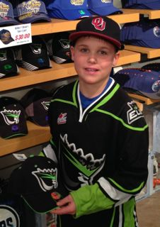
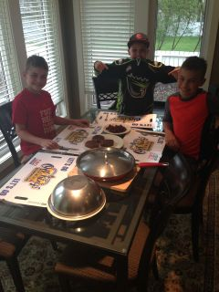

{kind=link}
2014: Farewell Dorothy

|
|
2014: Farewell Dorothy |
|
Our 2014 end-of-the-year blog is also available in Portuguese. Edições anteriores estão aqui.
 As we sat in her well-appointed apartment, she was planning for the reception --- sandwiches and a salad would be fine --- reviewing the cost of renting the rooms and of paying the minister and the organist. She wanted to pick up the tombstone --- a classic design in marble of good size, but not so big that it would stand out in the cemitery in New Brunswick. Before this meeting she had already picked up the color of the flowers, the hyms that would be sang and the Bible readings for the service. She also wanted to specify the costs that would be covered from the estate for the trip to Sackville, New Brunswick, to take hers and Bill's ashes or internment. This meeting took place on August 18th. Dorothy was still well, but we all new that her time with us was short because her cancer had come back and was fast growing. She was at peace with her fate and mostly concerned about leaving all her affairs in order for the people left behind. I was there because I had accepted the responsibility of acting as the executor of her last will. This was the time for her to give me instructions.
The next time we met was on Labour Day. Dorothy was then under hospice care at the Grey Nuns hospital. Her voice was weak, but she was in good spirits. We talked for quite a while. Our conversation revolved around the issue that she had to leave while this world was still with so much unrest. She was concerned that people do not get along "given that, when you come down to it, people are simply people, everybody is the same." In her lifetime she had gotten alone well with people from so many different places and different faiths. At the end of this meeting she said "We have said all that we have to say to each other. Now go and take care of your family. You will be called when the time comes and you are needed."
That call came on September 25th. Dorothy had been our neighbor for twelve years, and was the grandma-next-door for Daniel, before she moved to her assisted-living place. Over the years she became a good friend and a confident. With her passing, I found myself dealing with the distribution of her personal belongings, paperwork with civil registry, banks, funeral homes, the Court of Queen's Bench Surrogate Court, etc --- nothing could happen without my signature. I liked Dorothy very much and feel that I am honouring her as I fulfill the role that she assigned to me. But certainly it put a severe strain in an already super busy Fall schedule --- I was teaching three courses, one new and one with large enrollment. Indeed, Dorothy apologized that her passing would come at a time that I was so busy!
In between the two meetings with Dorothy I hosted a large international conference in my area in Edmonton with all the responsibilities of taken care that everything was in place for everyone, but also with the joy of welcoming many colleagues and friends to Edmonton. Right after the conference, I took off to Jasper and Banff with my colleagues Edson Borin and Sandro Rigo from Campinas. In Jasper we were surprised with an upgrade at the Jasper Park Lodge to a "cabin" that had five suites and a living room that was larger than our house. We later learned that this was the cabin where Marylin Monroe stayed when she was filming in Jasper. Upon leaving Daniel asked: "Can we stay in the same house the next time we come to Jasper?" I smiled and said "Sure."
Daniel had joined us in Jasper after spending several days with Scott on a horse-riding trip in the back country in Nordegg. Scott had kindly offered to take him on a camping trip while I was hosting the conference in Edmonton. Daniel enjoyed very much his days as a cowboy in the mountains sleeping in tents and riding horses.
 In November I was very proud of my Mom. She took a writing course organized for seniors at the University close to her house in Brazil and three of her short stories were selected for publication. She even had a night to autograph the book at a bookstore in Porto Alegre! My Mom was very proud of her accomplishments as she should be.
In November too we were very happy to welcome back our good friend Fran Moore who has always had a strong connection with us and with Daniel. She now lives in Brisbane in Australia.
Throughout the year we worried and follow closely the updates of my colleague and friend Laurie Hendren and her ordeal with breast cancer. I always admired Laurie's approach to research and to life. This reading of Laurie was confirmed through her experience with the health-care system in Quebec. When she became a patient she researched treatment options herself and introduced a new surgery technique --- the Goldilocks Mastectomy --- to her surgeon, who then used it for the first time in Quebec. Later she partnered with the Director of her radiotherapy clinic to write a successful research grant to create a scheduling system to improve the experience of patients undergoing treatment.
 Serving as an elected representative in the Dean of Engineering search committee in the Fall also took a significant amount of time and energy. I ended up also serving in two chair selection committees in the Faculty of Medicine. On top of that I was elected in January to serve in the Board of Directors of the Standard Performance Evaluation Corporation (SPEC), a large organization congregating all the top computer companies in the world. With such a heavy load my Fall term had plenty of days starting at 3:30 or 4:00 AM while I tried to keep my head above water. Thus, the last few quiet days at Scott's parents house, where I sleep like a normal person, feel like a great gift.
Serving as an elected representative in the Dean of Engineering search committee in the Fall also took a significant amount of time and energy. I ended up also serving in two chair selection committees in the Faculty of Medicine. On top of that I was elected in January to serve in the Board of Directors of the Standard Performance Evaluation Corporation (SPEC), a large organization congregating all the top computer companies in the world. With such a heavy load my Fall term had plenty of days starting at 3:30 or 4:00 AM while I tried to keep my head above water. Thus, the last few quiet days at Scott's parents house, where I sleep like a normal person, feel like a great gift.
Still in the professional front I was pleased to be recognized as a Distinguished Engineer by the Association for Computing Machinery (ACM).
 The heavy teaching and loads of service during the Fall term kept me mostly grounded in Edmonton except for a quick trip to Toronto, but earlier in the year conferences took me to Edinburgh (June) and Dublin (March). In March I actually flew from Dublin to Sao Paulo where I spent a week working on a collaboration with colleagues at Unicamp. One of the high points of my visit to Brazil this time was an opportunity to reconnect with my friend Joao Campari from my days in Austin, Texas. Joao is an economist and now has an important role with Nature Conservancy in Latin America. We had seen very little of each other for a long time.
In May we got a new vehicle, a red Chrysler minivan that Daniel wanted for a long time. We used it for our traditional trip to Calgary to visit with Daniel sisters. This time we combined the trip with a trip to Banff where Scott was attending a Wine Show at the Banff Springs Hotel. While there Daniel bought his first serious skateboard and started practicing on it.
 In Calgary we learned that Mak, Daniel oldest sister was expecting. Daniel's nephew, Leo Xavier, was born in October. Daniel had the best line when Mak was telling us about being pregnant. He said "Hey you are 18 year old, just like my Grandma when she had my dad!" Leo was not the only addition to the family, earlier in the year my brother Marco and Fernanda welcomed home their daughters Sofia and Giovanna, and in November, my nephew Tiago and Tatiana received Theo to big-brother Gael.
Scott's liquor store is going very well. It is now called 7 Degrees. He and his partner, Chris, have been very busy working with restaurants and with events organized for charity groups and community leagues. They are also frequently attending trade shows and in daily contact with representatives from Wineries from around the world. Now that Scott is a certified Sommelier, he has thought twice a Wine-tasting course offered by the International Sommelier Guild. Now they are also organizing a new Beer-tasting course. Thus if you know people in Edmonton that might be interested in learning more about beer, make sure to put them in contact with Scott.
Sometime in the Spring we welcomed home Pickles --- a small grey female cat. Scott and Daniel brought her home from the Humane Society. I was surprised with the breaking of the "Boys only" rule for the house but Daniel said that Pickles was "the right cat."
 Soccer season in May and June was cold and damp, we spend many games under freezing rain.. This is how we build up tough Canadians! But the camaradie with the gang and the most supportive and committed group of parents made it all worth it. Sometimes the dominance of the Windsor Park squad made for a relaxing game for Daniel on net.

Soccer season in May and June was cold and damp, we spend many games under freezing rain.. This is how we build up tough Canadians! But the camaradie with the gang and the most supportive and committed group of parents made it all worth it. Sometimes the dominance of the Windsor Park squad made for a relaxing game for Daniel on net.

 If you follow hockey you will know that the Oilers are even worse than Brazil was in the World Cup! But there is good hockey in town. We enjoyed watching some Oil Kings' games in town and celebrated their winning of the Memorial Cup. We also went to many University of Alberta's Golden Bears hockey games and celebrated as the Bears won the 2014 Canadian Interuniversity Sport (CIS) championship, also known as the University Cup in Canada. Daniel knows many of the players because he goes to the Bears' Summer Camps and the Bear players are his coaches. Thus, it was a special treat to go to a University Chancelor's reception where we had a party and watched the game from the Box at the Clare Drake arena. In May we managed to host a dinner for Denis and Sinan, Daniel's best German friends, to celebrate the OilKings' Championship. 
 We had a quick family trip to the hostel in Nordegg for the Canada Day holiday and then World Cup fever took over our house in July. Daniel even had a Markus Reus (a famous German player that ended up not in the official team because of injury) haircut to welcome the event. We remained cheerful even after Germany rightly trashed a ruefully inadequade Brazilian squad. Germany was our second most favorite team at home before the championship started.
We had a quick family trip to the hostel in Nordegg for the Canada Day holiday and then World Cup fever took over our house in July. Daniel even had a Markus Reus (a famous German player that ended up not in the official team because of injury) haircut to welcome the event. We remained cheerful even after Germany rightly trashed a ruefully inadequade Brazilian squad. Germany was our second most favorite team at home before the championship started.
Late in November I was influenced by some new neighbors that moved down the lane from us and built an ice rink in our backyard for Daniel. I had no experience building a rink, but winged it and it worked just fine. Daniel said that I was "the best Papai in the world" for doing that. I said: "Man, I am working hard to keep that title!"
In October our SAAB 9.5 died and Scott got a pickup truck. Daniel immeditely switched preferred vehicles and no longer wants to ride around on the Minivan!
A highlight of our Summer was our Garden Party. With the growing circle of friends and acquaintances through Scott's participation in the Edmonton wine scene, this social event is growing. This year Daniel decided that instead of presents or host gifts we should ask our friends for a donation to a charity. He said that we should make it to an organization "that helps kids like me." Thus we selected the Learning Disability Association of Alberta. Thanks to the generosity of our friends, we sent a donation of over Ca$ 1,400 to the LDAA.
For this Christmas I am in the house of Scott's parents with Daniel and Scott is back in Edmonton taking care of the store. On the 31st Scott comes down here to take Daniel back home and I go on to attend a workshop in Dagstuhl in Germany. In this trip to Germany I will also meet my friend Matthias and his family.
Merry Christmas and a joyful 2015!
Nelson, Scott & Daniel{kind=link}
{kind=link}
{kind=link}
{kind=link}
{kind=link}
{kind=link}
{kind=link}